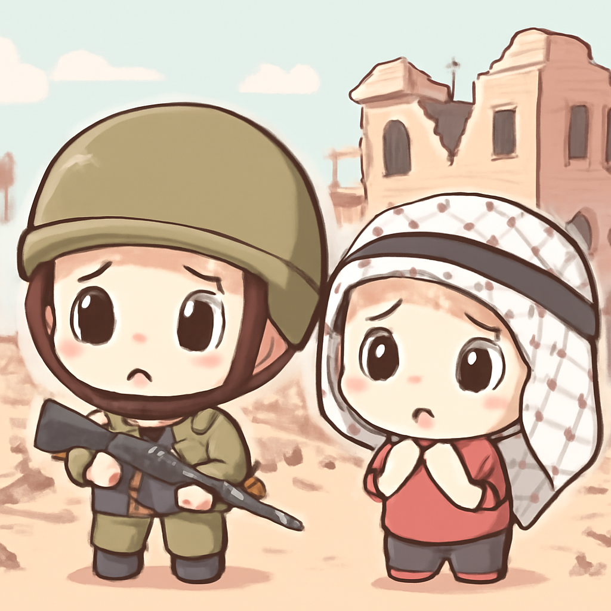

其一 · 以色列加薩 · 衝突再起造成13人死亡
以色列對加薩發動空襲，造成多死傷

在加薩地區，以色列的空襲再次引發衝突，造成至少13人死亡，這次空襲主要針對哈馬斯軍事目標。事件發生在哈馬斯剛同意解除武裝之後，顯示局勢依然緊張，未來可能影響和平進程。看來，這場拉鋸戰就像永無止境的劇集，永遠在等待下一集。
🔗 原始新聞 ↗
2026-08-03 · 以古觀今，以笑抗愁
以色列對加薩發動空襲，造成多死傷

在加薩地區，以色列的空襲再次引發衝突，造成至少13人死亡，這次空襲主要針對哈馬斯軍事目標。事件發生在哈馬斯剛同意解除武裝之後，顯示局勢依然緊張，未來可能影響和平進程。看來，這場拉鋸戰就像永無止境的劇集，永遠在等待下一集。
🔗 原始新聞 ↗
特朗普表示，將對伊朗的軍事行動暫時擱置
美國總統特朗普宣布，因為與伊朗的談判有進展，決定暫時取消對伊朗的軍事打擊計劃。這一決定在中東地區引發了廣泛的關注，因為這可能改變美國的外交政策。看來，特朗普真的是一位隨時準備改變劇本的導演。
🔗 原始新聞 ↗
印尼渡輪火災後，五人遇難，41人失聯
在印尼馬杜拉島附近，一艘渡輪發生火災，造成至少五人遇難，41人失聯。船上有約250人，這起事件的調查仍在進行中，事故原因仍不明。人們對渡輪安全的關注再次提升，似乎每次出行都可能成為一場冒險。
🔗 原始新聞 ↗
科技界競爭加劇，影響全球市場
在日本東京，主要科技公司間的競爭日益激烈，尤其是在人工智慧和數據隱私方面的爭論。這場技術競爭不僅影響到這些公司的未來，也可能改變我們日常生活的方式。未來我們可能要重新思考，誰才是真正的數位霸主。
🔗 原始新聞 ↗
巴基斯坦警方遭到自殺攻擊，造成14人遇難
在巴基斯坦斯瓦特，發生了一起自殺炸彈襲擊事件，造成至少14人遇難，且巴基斯坦塔利班已聲稱負責。這起事件再度揭示了當地安全形勢的嚴峻，讓人不禁感慨，和平的路途依舊艱難。
🔗 原始新聞 ↗